От замера до приёмки – пять шагов
Замер, смета, материалы, работы, приёмка. Подробности по срокам и порядку – у замерщика.
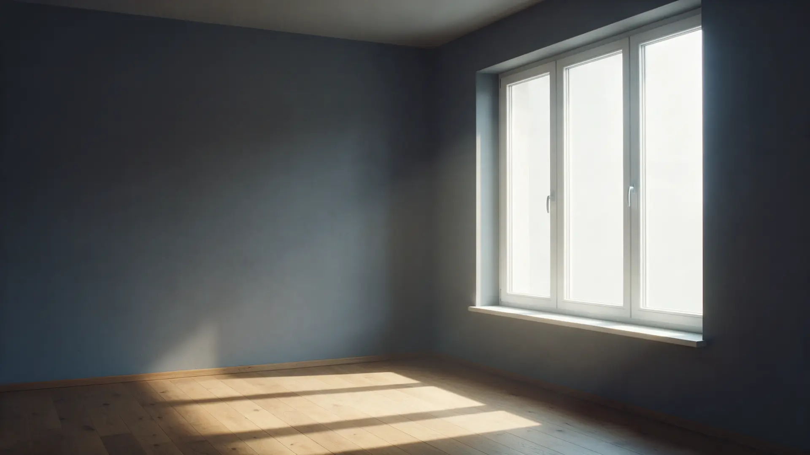
Отделка · утепление · электрика · встроенные шкафы
Лоджия становится комнатой: стены, пол, свет, розетки и встроенный шкаф. Цены за м² в открытом прайсе, итоговую сумму называют после замера.
Напишите в WhatsApp – подберём день замера.
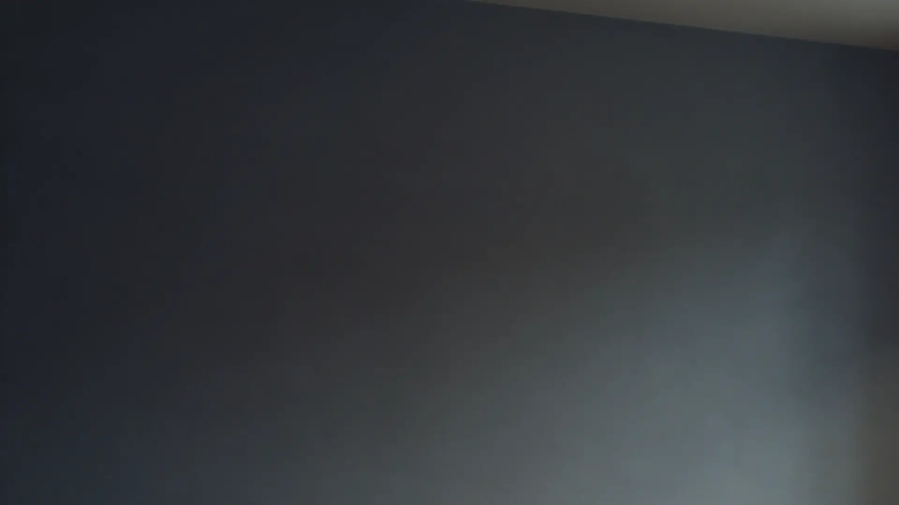
Что меняется
Утепление, отделка, электрика и мебель – в одном месте. Состав работ и сумма – после замера.
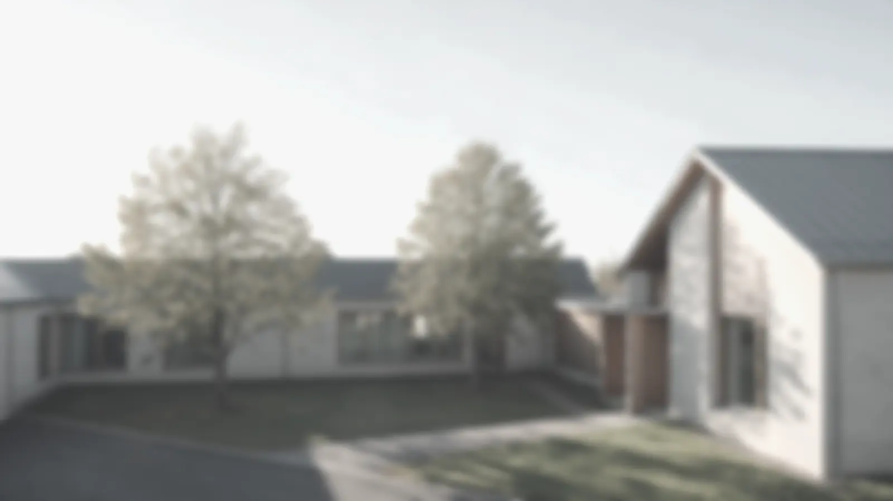
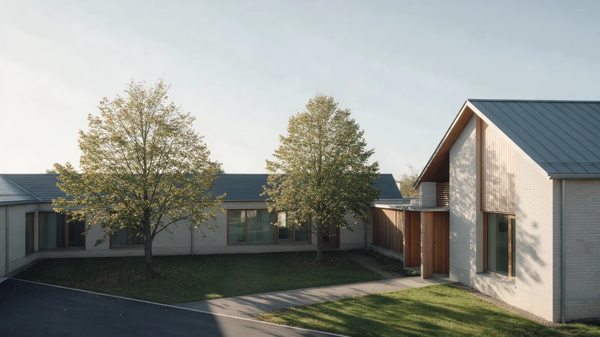
Старое окноДует из-под рамы, стекло запотевает, слышно двор
Ремонт лоджии легко пересчитать «по ходу». Три вопроса, которые помогают сравнить предложения.
Поэтому у нас так: прайс за м² и за позицию открыт на карточке, замерщик считает объём на месте, ответы на эти вопросы можно получить до договора.
Замер, смета, материалы, работы, приёмка. Подробности по срокам и порядку – у замерщика.
Смотрим остекление, стены, пол и что нужно утеплить. Обсуждаем отделку и мебель – что нужно именно вам.
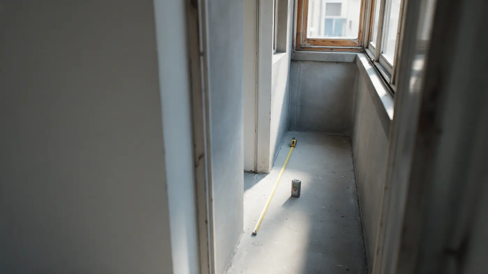
Что делаем, из чего и сколько стоит – по позициям из прайса. Условия оплаты и сроки – уточняйте при замере.
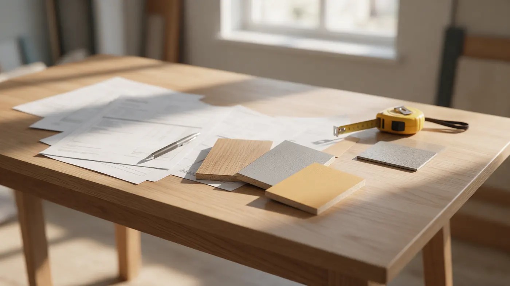
Вагонка, панели, ламинат или кварцвинил, утеплитель – по выбранной смете.
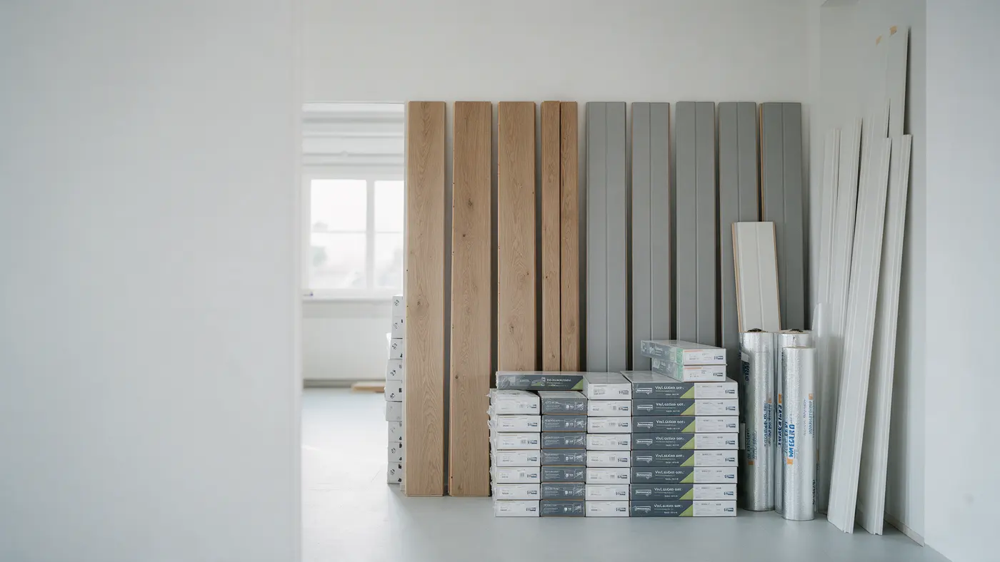
Работы идут по порядку из сметы: сначала стены и утепление, потом пол, свет и мебель.
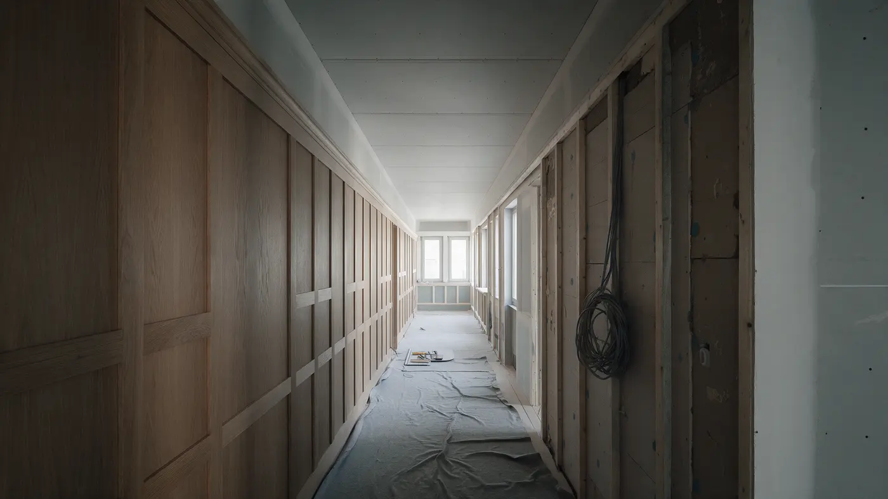
Смотрим швы, стыки, свет и розетки, открываем дверцы шкафа. Документы и условия – по договору.
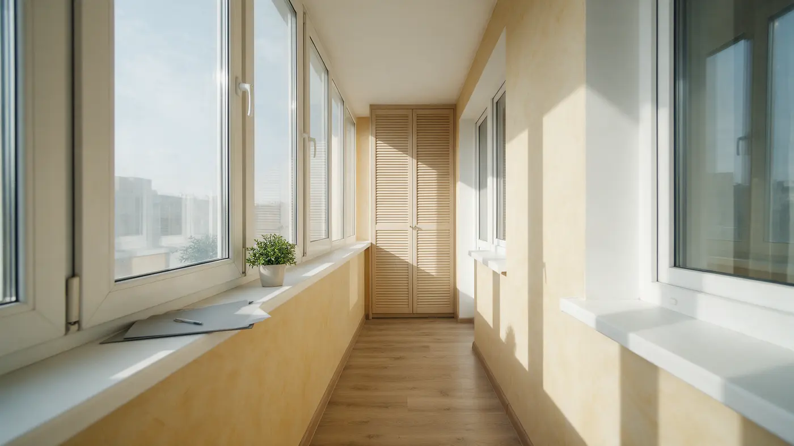
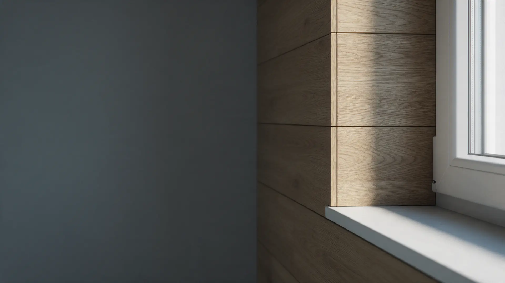
Из чего делаем
ПВХ-панели – от 2 970 ₽ за м², МДФ – 3 630 ₽, вагонка – от 3 300 ₽, имитация бруса – 3 850 ₽. Есть штукатурка, декоративная краска, гибкая керамика.
Ламинат – 5 500 ₽ за м², кварцвинил – 6 600 ₽, доска шпунт – 3 960 ₽, влагостойкая фанера – 3 083 ₽, линолеум – 550 ₽.
Утеплитель 50 мм с пенофолом – 3 100 ₽ за м², 50+50 – 4 950 ₽. Тёплый пол – 4 200 ₽ за м².
Вывод электричества на балкон – 3 850 ₽, электроточка – 1 900 ₽, светильник с монтажом – 1 850 ₽, светодиодная лента – 1 650 ₽ за метр.
Жалюзийный шкаф – от 30 800 ₽, тумба деревянная – от 8 250 ₽, комод – от 12 200 ₽. Размеры считают под вашу лоджию.
Прайс на карточке Яндекс Карт давно не обновлялся: актуальную сумму подтверждает замерщик.
Стены и пол лоджии под ключ: панели, вагонка, штукатурка, ламинат или кварцвинил. Цены – за м² по позициям прайса.
Что в прайсе
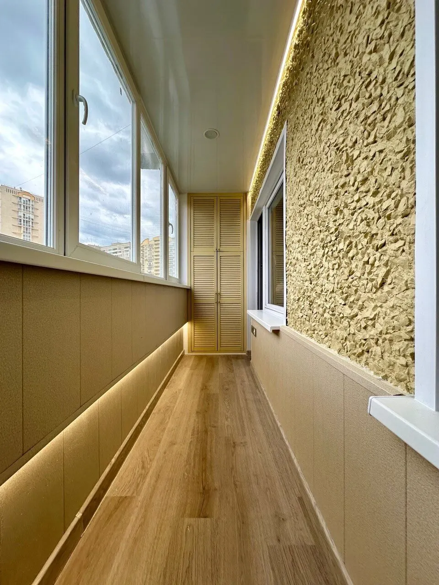
Жалюзийный шкаф от 30 800 ₽, тумба деревянная от 8 250 ₽, комод от 12 200 ₽. Размеры – под вашу лоджию.
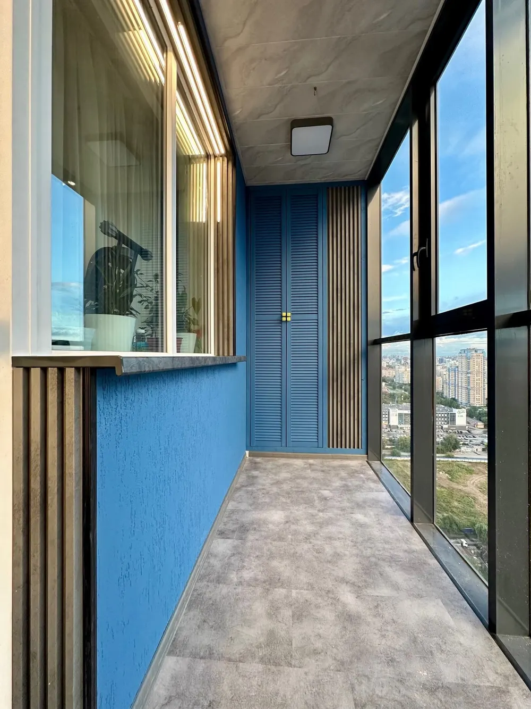
Утепление стен и пола, тёплый пол 4 200 ₽ за м², вывод электричества 3 850 ₽, подсветка и светильники – лоджия становится комнатой.
Расскажите про вашу лоджию – подберём день замера, итоговую сумму узнаете на месте.
Вызвать замерщика«Вот уже год,как сделали лоджию,а она как новая.»
«Действительно как и обещали сделали всё за неделю, результаты превзошли все мои ожидания.»
«Выполнены работы по отделке балкона ПВХ панелями и пола - кварц-винилом.»
Вызвать замерщика
Напишите, какая у вас лоджия или балкон и что хотите сделать. Ответим и согласуем время замера.
Вызвать замерщика